Coffee Machine
A precise brewing system designed to translate origin into daily ritual. The machine becomes the quiet bridge between the coffee's journey and the user's morning.
Coffee Experience System
Brewed for where you are.
Made for where you're from.
Emotion. Memory. Belonging.
The familiar scent of morning. A ritual carried across oceans. Coffee is not just a drink — it is a place you always return to, no matter how far you've traveled.
Origin. Soil. Global Culture.
Every bean holds the memory of its land. From highland mist to volcanic earth, the origin speaks — and RESO listens.
Coffee Machine · Origin Coffee · Brew Card
A precise brewing system designed to translate origin into daily ritual. The machine becomes the quiet bridge between the coffee's journey and the user's morning.
Every bag carries the story of where it was grown, how it was processed, and the regional traditions that shaped its flavor. The package becomes a record of place.
Each purchase includes a card written for that specific origin, guiding the user through a brewing method that carries the culture, care, and distance behind the bean.
Four origins. Four stories. One shared ritual.
Yirgacheffe Highlands
The birthplace of coffee. Bright, floral, ancient — a cup that remembers everything.
Ogasawara Islands
Rare island-grown beans. Mineral clarity, quiet depth — precision in every note.
Huila Highlands
Warm, rounded, and grounded. A rich cup shaped by highland sun, volcanic soil, and careful harvest traditions.
Pu'er & Baoshan
Earthy body, stone fruit notes — where tea culture meets coffee soil, and tradition runs deep.
RESO extends from product packaging to brew cards, using one visual system to make origin visible and ritual tangible.
Each bag is designed as an origin marker. The cream front creates a quiet premium surface, while deep green side panels and bottom folds carry the language of land, plant, and distance.
The brew card turns information into experience. Origin, altitude, process, flavor notes, and brewing method are organized as a small object the user can keep, read, and follow.
Topographic lines, warm cream, forest green, amber gold, and coffee brown form a visual language connected to soil, landscape, morning light, and the journey from origin to cup.
The packaging does more than contain coffee. It introduces the place behind the bean, gives each origin a clear identity, and connects the physical product to the ritual of brewing.
In the full system, the coffee bag, coffeemaker box, and brew card work together as a commercial brand experience: one product family, one visual language, and one consistent story.
#2C5F2E · Origin, coffee plant, land
#F5F0E8 · Milk, steam, clean surface
#D4A017 · Brewed coffee, warmth, morning light
#8B5E3C · Soil, roast, grounded flavor
A curated view of RESO applications — from refined packaging and brew cards to campaign posters and visual extensions.
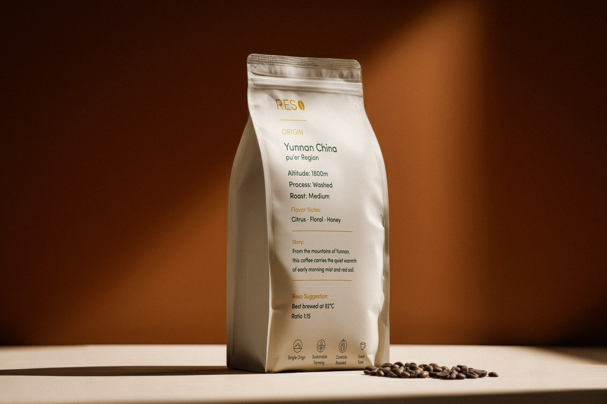
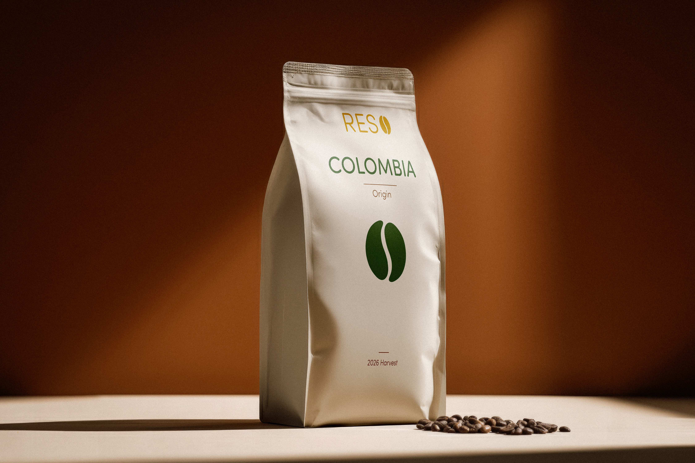
Two origin-based packaging sets shown through front and back applications, balancing premium shelf presence with clear product storytelling.
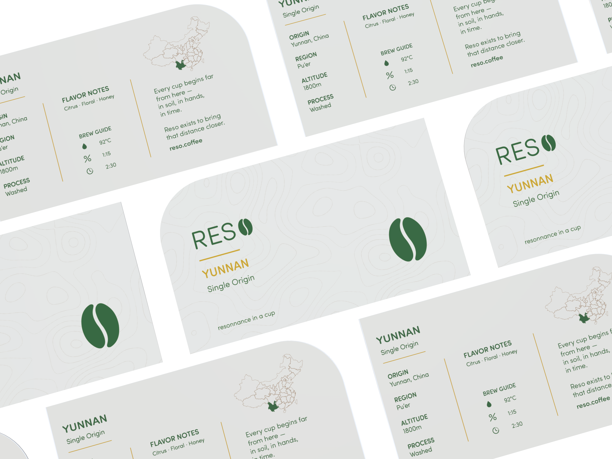
A printed guide system that turns origin, flavor notes, and brewing ritual into a tactile user experience.
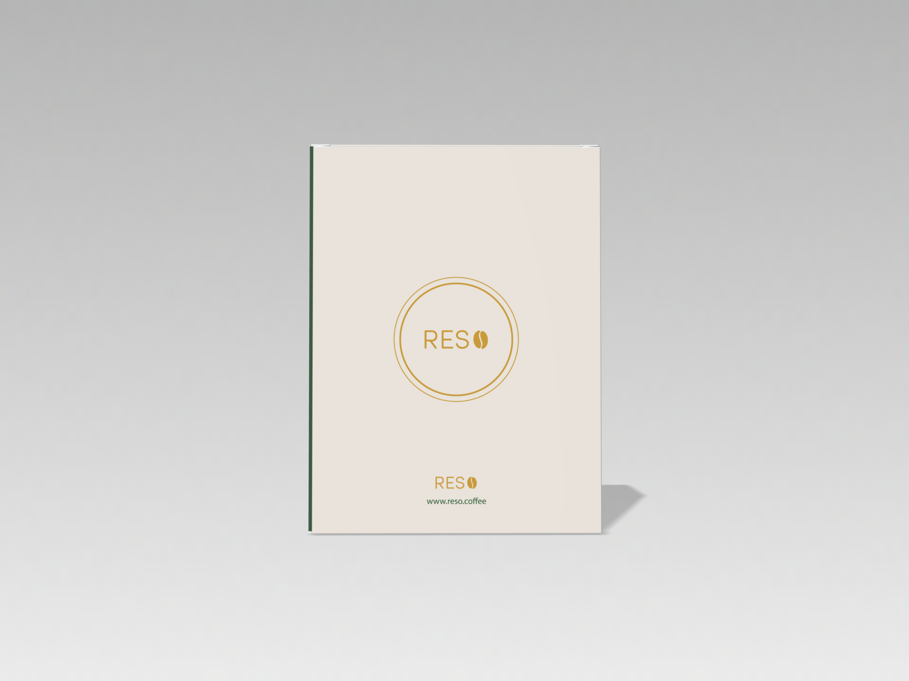
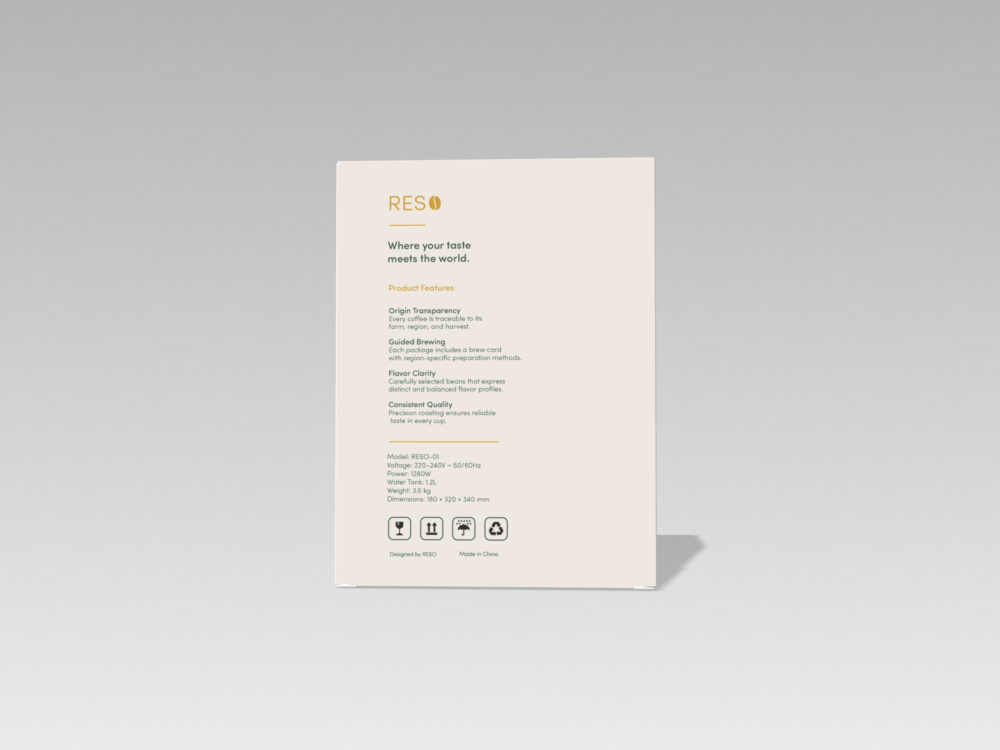
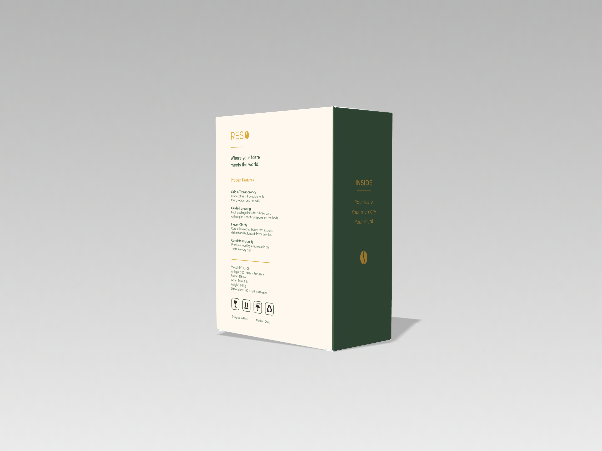
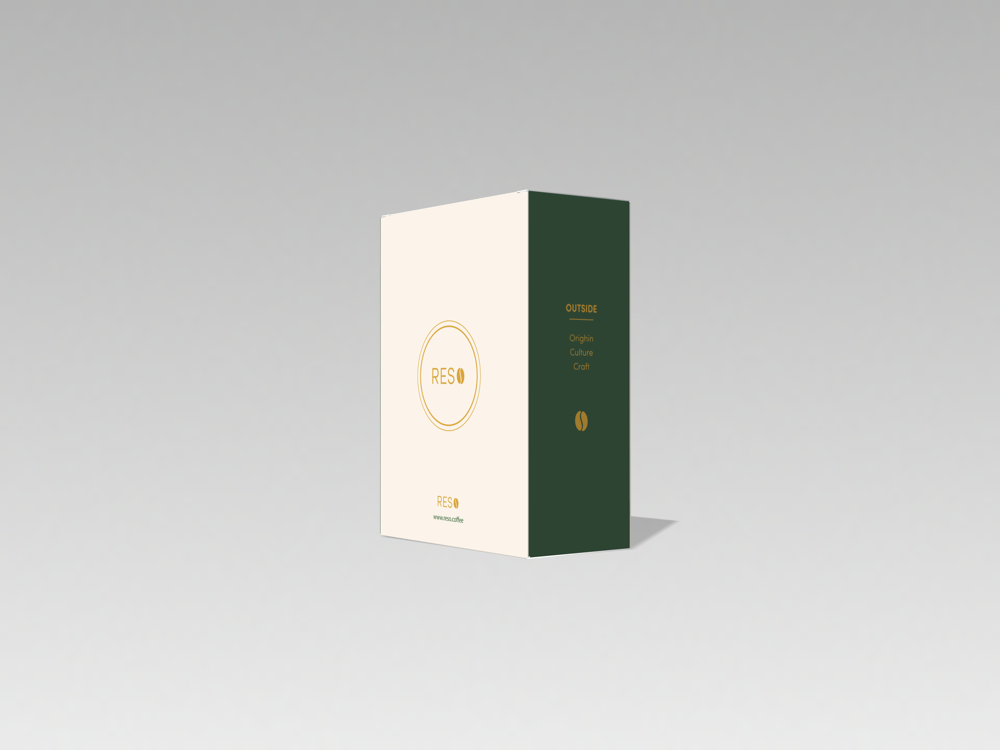
A refined structural package shown through four box views, framing the machine as the center of the RESO coffee ritual.
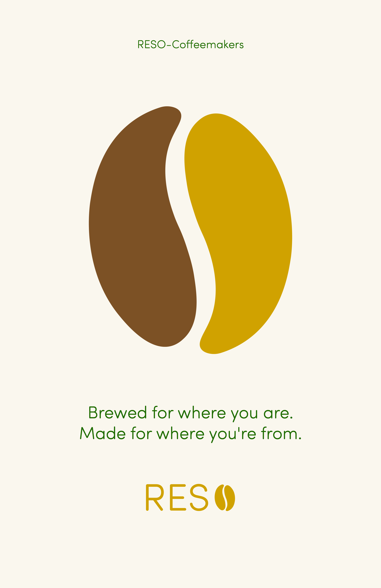
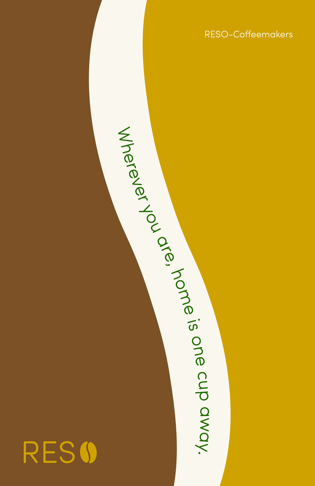
Two poster directions extend RESO’s visual language into campaign storytelling, using controlled color shifts, topographic texture, and emotional imagery to connect origin, ritual, and memory.
The refined system extends RESO beyond packaging, turning the machine box and brew card into tactile brand objects.
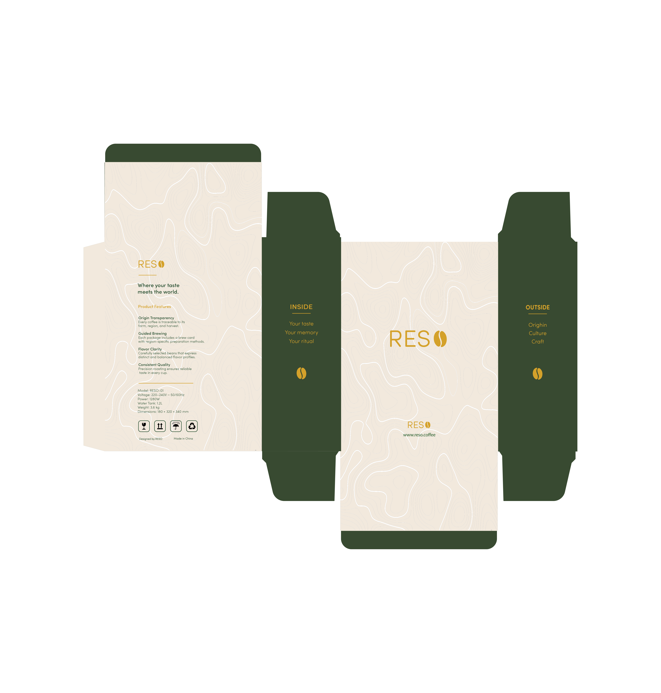
The refined machine box uses topographic texture, quiet cream surfaces, and deep green structural panels to shift the package from container to storytelling object.
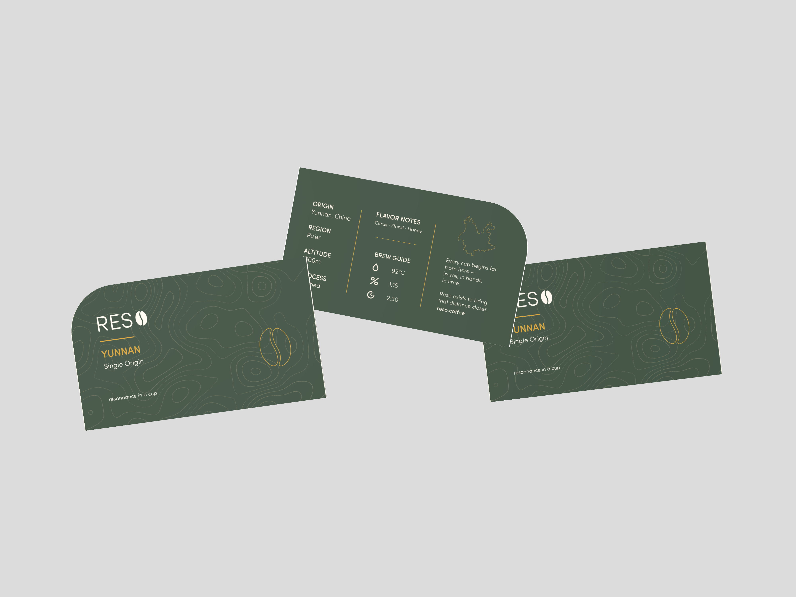
The refined brew card becomes a physical guide for the ritual, carrying origin details, flavor notes, and brewing steps in a more collectible and atmospheric format.
The refined system transforms packaging and printed matter into objects that users can hold, keep, and return to.
Topographic texture, warm cream, deep green, and controlled amber details create a quieter premium surface across both box and card.
Opening, reading, holding, and brewing become part of the same experience, connecting origin storytelling to daily use.
#F2E9DD · tactile paper surface
#384A31 · refined structure and side panels
#D4A12A · logo and controlled accent linework
#EFE7DC · quiet terrain texture